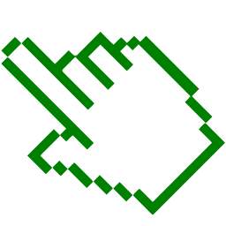

Oi, sou o Heitor, o Cara da TI.
Consultor e Suporte de Tecnologia.
Com 15 anos de experiência, adquiri um vasto conhecimento na área, especialmente no setor publicitário, onde me especializei em computadores Apple. Desde os meus 13 anos, sou apaixonado por tecnologia e estou sempre em busca de novidades. Atualmente, tenho me aventurado no mundo Linux e software livre.
Macs
Devido à minha vasta experiência e atualização constante, sou capaz de ajudá-lo em diversos problemas relacionados a software do seu Mac, desde possíveis upgrades (se seu modelo permitir) até dar aquela formatada para melhorar a performance. No entanto, caso o problema seja de hardware, posso indicar assistências confiáveis e de preço justo. Saiba mais
Pc/Windows
Se o seu caso é um PC com Windows, também posso ajudá-lo, indicando soluções de software e hardware que realmente vão resolver o seu problema. Saiba mais
Calibração
Se você trabalha com arte, fotografia ou impressão com fidelidade de cor, posso fazer um trabalho de padronização de cores para que todos possam ver as cores de maneira uniforme. Saiba mais
Backup
Por fim, quero lembrá-lo da importância de sempre fazer backup dos seus arquivos importantes. Como já perdi coisas importantes no passado, sou um defensor ferrenho do backup bem feito.
Se você precisar de ajuda para escolher a melhor opção de backup, pode contar comigo. Saiba mais
Atendimento
Atendo por agendamento ou contrato, oferecendo suporte confiável e acessível para empresas e pessoas físicas. Me orgulho de ser amplamente recomendado por indicações, sendo o parceiro ideal para cada cliente. Saiba mais
Caso queira entrar em contato comigo, sinta-se à vontade.
Se preferir, é só clicar nos links abaixo para conversar ou me enviar um email.
Whatsapp: +55 11 99757-3737 
Email: heitor@caradati.com.br
Atendo em toda a cidade de São Paulo e região metropolitana.